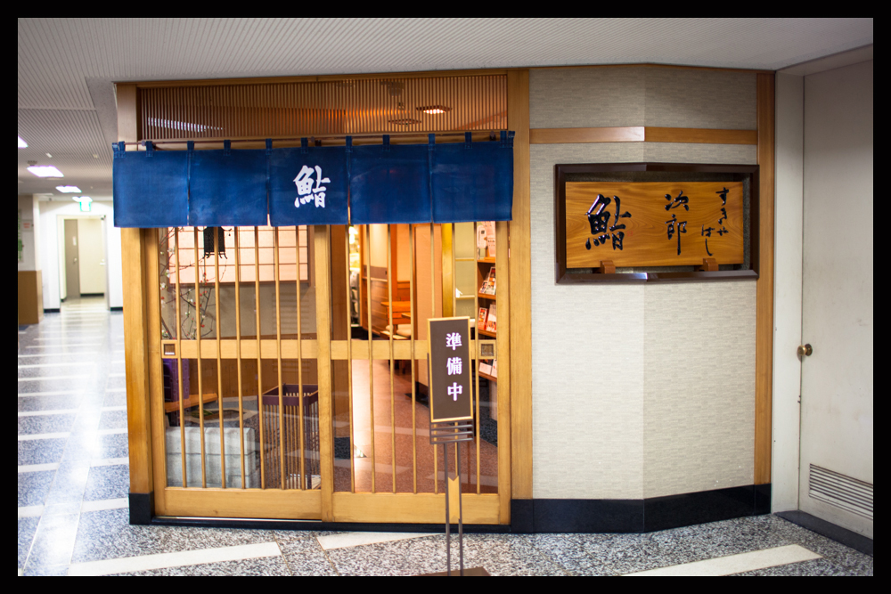
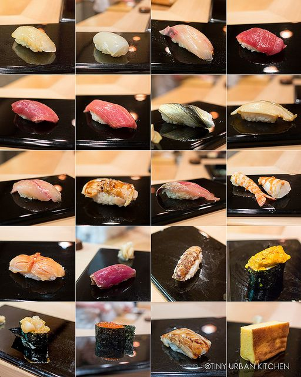

Sukiyabashi Jiro
 Sukiyabashi Jiro's humble layout, a mere 10-seat counter, is really the forefront of a three Michelin star restaurant...
...where Presidents Barack Obama and Shnizo Abe had dined in 2014. Sukiyabashi Jiro is led by sushi master Jiro Ono, a chef who dedicated his life to the art of sushi. The experience at Sukiyabashi Jiro is its Omakase course. Omakase is a Japanese phrase meaning "I'll leave it up to you", and perfectly describes this style of sushi tasting. Every day, Jiro personally designs the 20 piece tasting menu and it is made throughout the day, prepared right in front of the patron.